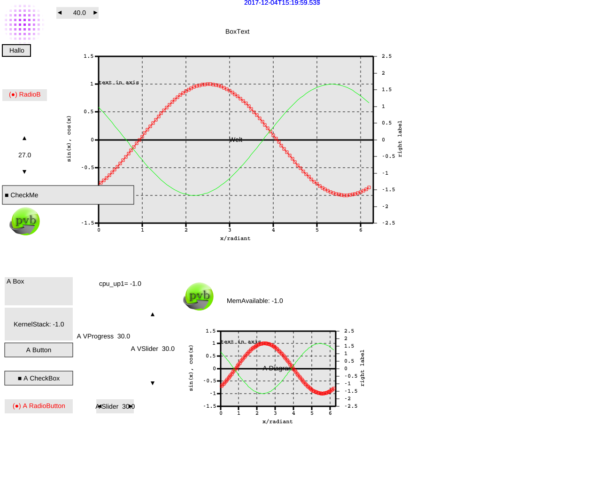

Run the pvserver with: "./pvs -http -svg".
According to my tests "firefox http://localhost:5050/testsvg.html" works but "opera http://localhost:5050/testsvg.html" and "chromium http://localhost:5050/testsvg.html" do not render the SVG. They only show the ALT text. But you can show the SVG with rightMouseClick on SVG and openInNewTab.
As indication that this is not my fault see Chrome-bug https://stackoverflow.com/questions/10737166/chrome-not-rendering-svg-referenced-via-img-tag .